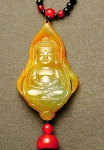

规格：6x2x4cm
黄翡 2017年

这些年来，我国更多提倡金玉结合的创作理念，将古人对天地、阴阳的理解、从“儒、释、道”三合一的国学文化精神中，找到了属于这个时代的答案与全新的表达方式，并长期致力于研究从悠久的传统信仰文化中，提取当今最需要的时代精神，创作出具有正能量并能引导成为大众接受的时代信仰类作品。如十一年前，我原创的《宝宝佛》作品，今天已被业内广泛效仿，深受广大人民群众的追崇喜爱。